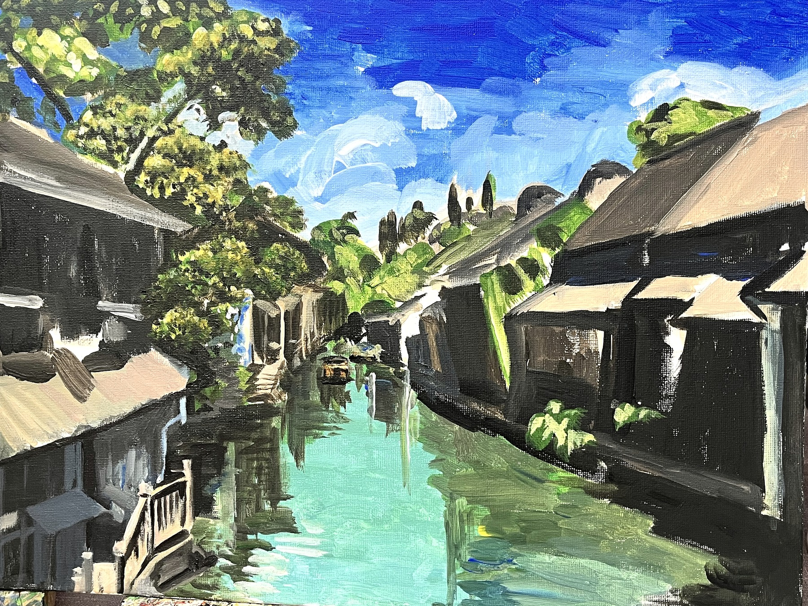
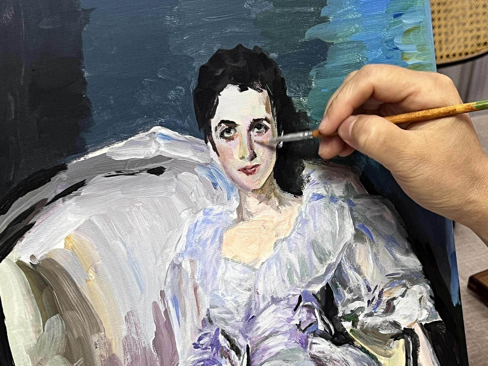

观看
她开始从“看见对象”转向“看见关系”：视线、构图、明暗、深浅与色彩之间如何互相支撑。
她把理性结构带进绘画：从写生、构图与色彩关系出发，慢慢把练习转化为一个可以持续推进的个人创作计划。
小熊的成长线索带有一种清晰的理性气质：她不是急着完成一张画，而是在学习怎样让一个画面成立。
她开始从“看见对象”转向“看见关系”：视线、构图、明暗、深浅与色彩之间如何互相支撑。
结构不只是画面的骨架，也是一种思考方式。她逐渐把理性分析转化为绘画中的组织能力。
大师语言、色彩练习与写生经验，正在被她慢慢转译为自己的作品计划和长期线索。
这里展示的不是作品完成清单，而是几条正在形成的作品方向。
从视线框、构图和黑白灰关系进入画面组织，建立看见结构的基本能力。
把色彩从装饰性的“好看”转化为画面的秩序、节奏和空间判断。
从练习进入作品线索，让每一次训练开始服务于一个更长期的个人创作计划。
从较安全的结构分析走向更主动的画面承担：天空、水面、人物脸部与手部都开始被她正面处理。
这组新材料记录了一个清晰节点：小熊不只是在理解画面，而是开始相信自己的判断，并愿意让画面承担更大的空间、色彩和人物难度。



这不是单纯“画得更完整”，而是她开始在画面里确认：我可以做出判断。
评语：小熊这一次的突破，首先发生在创作姿态上。她不再只是谨慎地分析结构，而是敢于把空间推远、把明暗压重、把人物表情和手部动作放到画面中心。画面里仍有需要继续打磨的地方，但更重要的是，她开始相信自己的组织能力。这样的自我肯定，会成为后续作品集里非常关键的推进力量。
KART 以美术馆的方式保存一个人的变化：不急着归类，也不把成长简化为进度。
理性不是绘画的反面。对小熊来说，结构、色彩和构图正在成为一种更安静的观看方式。
她的档案提醒我们：绘画并不只属于“感性的人”。当一个人愿意认真拆解画面如何成立，艺术也会成为理解世界的方法。